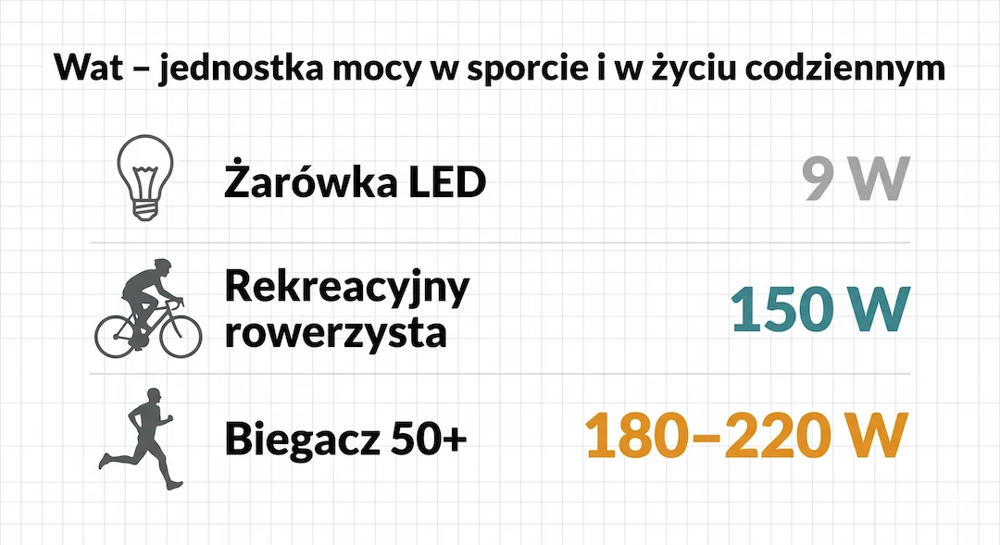
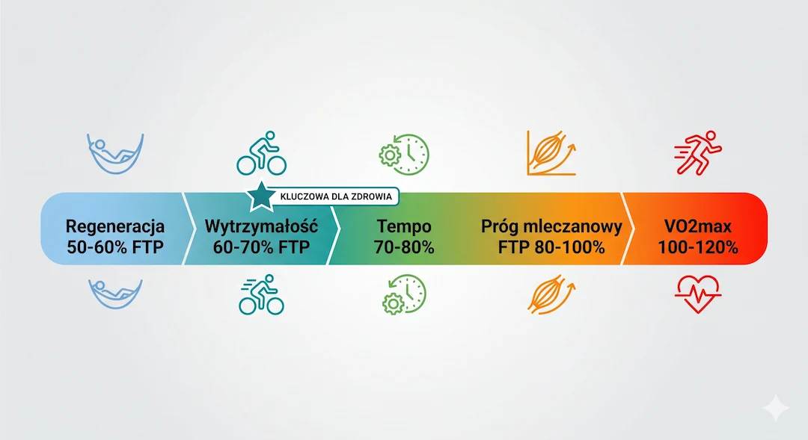
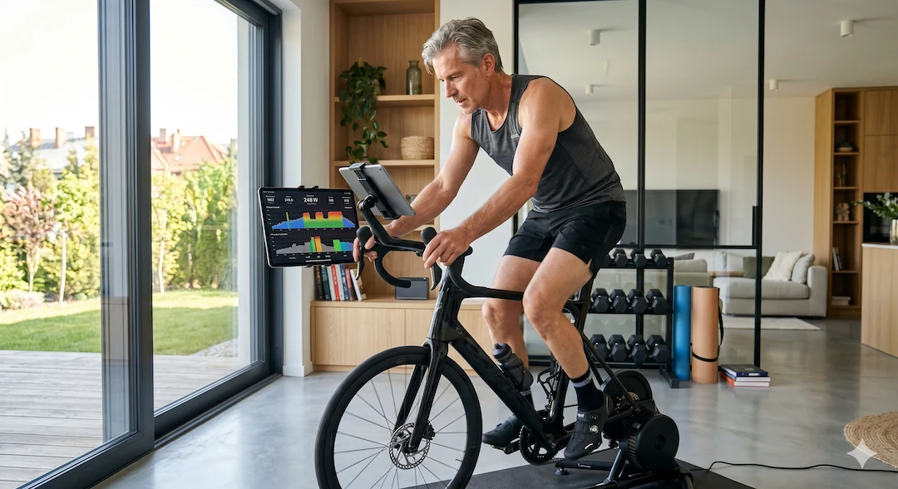
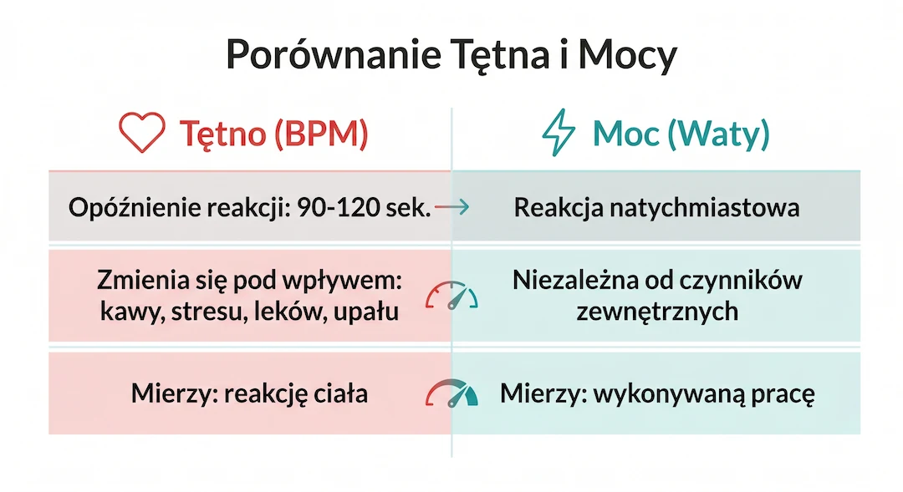

Moc treningowa mierzona w watach to najbardziej obiektywny wskaźnik kondycji sercowo-naczyniowej dostępny na nadgarstku. W przeciwieństwie do tętna, które po 50. roku życia staje się mniej wiarygodne przez stres, kawę czy leki, waty pokazują czystą pracę Twojego organizmu w czasie rzeczywistym. Zrozumienie tej jednej liczby na Apple Watch pozwala precyzyjnie dawkować wysiłek, budować sprawniejsze mitochondria i skutecznie opóźniać starzenie metaboliczne bez ryzyka przetrenowania.
Kluczowe wnioski
- Wat to jednostka pracy – w przeciwieństwie do tętna, nie zależy od stresu, temperatury czy kofeiny.
- Po 50. roku życia waty są stabilniejszym miernikiem intensywności niż tętno, które bywa fałszowane przez leki.
- Trening w Zonie 2 (60–70% mocy maksymalnej) to najsilniejszy bodziec dla zdrowia Twoich mitochondriów.
- Każdy wzrost VO2max o 1 MET (mierzony poprzez moc) obniża ryzyko zgonu o 13–15% według badań JAMA.
Czym jest moc w watach i dlaczego jest obiektywna?
Moc w watach (W) to ilość energii, jaką Twoje mięśnie generują w każdej sekundzie ruchu, będąca wynikiem pomnożenia siły przez prędkość. Jest to metryka obiektywna i natychmiastowa, co oznacza, że 200 watów zawsze reprezentuje tę samą pracę fizyczną, niezależnie od Twojego zmęczenia, nawodnienia czy temperatury otoczenia. W przeciwieństwie do tętna, moc nie wykazuje opóźnienia i pozwala na precyzyjną kontrolę wysiłku od pierwszej sekundy treningu.
Dla osoby po 50. roku życia ta stabilność jest kluczowa. Tętno może być zmienne pod wpływem stresu lub leków na ciśnienie, ale waty pokazują prawdę o Twoim silniku biologicznym. Jeśli dzisiaj biegniesz z mocą 180 W i czujesz się gorzej niż zwykle, to sygnał, że Twoje ciało potrzebuje regeneracji, a nie wolniejszego tempa. Monitorowanie parametrów życiowych z mocą pozwala uniknąć błędów treningowych.
Wniosek praktyczny: Traktuj waty jako „licznik prędkości” swojego organizmu, który nigdy nie kłamie, nawet gdy Twoje serce bije szybciej przez poranną kawę.
- Moc = Siła × Prędkość; jednostka pracy wykonanej w czasie.
- Waty są natychmiastowe – tętno reaguje z 90-sekundowym opóźnieniem.
- Obiektywny pomiar postępu: jeśli FTP rośnie, Twoje serce jest silniejsze.
- Niezależność od czynników zewnętrznych (upał, stres, kofeina).

Jak Apple Watch oblicza moc bez dodatkowych czujników?
Apple Watch oblicza moc biegową i kolarską za pomocą zaawansowanych algorytmów uczenia maszynowego, które łączą dane z GPS, akcelerometru, żyroskopu oraz barometru. Zegarek analizuje Twoją prędkość, nachylenie terenu (pod górę generujesz więcej watów), oscylację pionową oraz długość kroku, aby oszacować całkowitą pracę mechaniczną. Choć nie jest to bezpośredni pomiar siły jak w pedałach rowerowych, dla potrzeb zdrowotnych i amatorskiego sportu precyzja ta jest w pełni wystarczająca.
Badania opublikowane w czasopiśmie Sensors (2024) wskazują, że choć profesjonalne czujniki zewnętrzne są dokładniejsze, to trendy pokazywane przez Apple Watch są spójne i wiarygodne do śledzenia własnego postępu. Najważniejsze jest, aby porównywać własne wyniki w czasie, a nie z wynikami innych osób, ponieważ każde urządzenie ma swoją specyficzną kalibrację. Więcej o technologii w służbie zdrowia znajdziesz w naszych poradnikach.
Wniosek praktyczny: Nie przejmuj się, jeśli Twój zegarek pokazuje inne waty niż zegarek kolegi. Liczy się tylko to, czy Twoja średnia moc rośnie w skali miesiąca.
- Wykorzystanie GPS do precyzyjnego pomiaru prędkości i dystansu.
- Barometr mierzy przewyższenia – kluczowe dla wzrostu mocy pod górę.
- Akcelerometr śledzi dynamikę ruchu i „kadencję” Twojego ciała.
- Od watchOS 9 moc biegu jest dostępna na nadgarstku automatycznie.
Zona 2: Tajemnica długowieczności mitochondriów po 50-tce
Trening w Zonie 2, czyli przy intensywności odpowiadającej 60–70% Twojej mocy maksymalnej (FTP), jest najskuteczniejszym sposobem na poprawę zdrowia mitochondriów i metabolicznej elastyczności. W tej strefie Twój organizm uczy się efektywnie spalać tłuszcze jako główne źródło paliwa, co bezpośrednio przekłada się na lepszą kontrolę poziomu glukozy i obniżenie ryzyka chorób cywilizacyjnych. To właśnie ten „spokojny” wysiłek buduje fundament Twojej długowieczności.
Dr Iñigo San-Millán z Uniwersytetu Colorado podkreśla, że po 50. roku życia sprawność mitochondriów naturalnie spada, a trening w Zonie 2 jest jedynym bodźcem zdolnym odwrócić ten proces. Waty pozwalają utrzymać tę strefę idealnie – tętno często „ucieka” w górę podczas treningu, oszukując nas, że pracujemy za ciężko, podczas gdy moc pozostaje stabilna. Dopasuj swój plan treningowy do tych stref, by żyć dłużej.
Wniosek praktyczny: Staraj się spędzać 80% swojego czasu treningowego w Zonie 2 – to tempo, w którym możesz swobodnie rozmawiać, a zegarek pokazuje stałą, umiarkowaną moc.
- Zona 2 = 60–70% Twojej mocy funkcjonalnej (FTP).
- Poprawa gęstości mitochondriów – Twoich komórkowych elektrowni.
- Lepsza wrażliwość na insulinę i spalanie tkanki tłuszczowej.
- Zapobieganie „starzeniu się” Twojego metabolizmu.

VO2max i moc: Dlaczego ta liczba przewiduje Twoją przyszłość?
VO2max, czyli maksymalne pochłanianie tlenu, jest uznawane za najsilniejszy mierzalny predyktor długowieczności, a Twoja moc w watach jest z nim ściśle skorelowana. Badania opublikowane w JAMA Network Open wykazują, że osoby z wyższym VO2max mają o 50–80% niższe ryzyko zgonu z jakiejkolwiek przyczyny w porównaniu do osób o niskiej kondycji. Śledząc waty, możesz precyzyjnie budować swój pułap tlenowy, co jest najskuteczniejszą polisą ubezpieczeniową na drugą połowę życia.
Nawet niewielki wzrost mocy na Apple Watch (np. o 20 watów w skali kwartału) przekłada się na realne wzmocnienie mięśnia sercowego i naczyń krwionośnych. Po 50. roku życia każde „dodatkowe” waty oznaczają większą rezerwę zdrowotną na wypadek choroby czy zabiegu medycznego. Badaj swoje serce regularnie i używaj watów jako miernika jego siły.
Wniosek praktyczny: Skup się na systematycznym podnoszeniu swojego wyniku FTP. Wyższa moc to nie tylko sport – to silniejsze serce i dłuższe życie w pełnej sprawności.
- VO2max to najlepszy wskaźnik „biologicznego wieku” organizmu.
- Każdy wzrost sprawności o 1 MET obniża ryzyko śmierci o ok. 15%.
- Waty pozwalają mierzyć VO2max bez wizyty w specjalistycznym laboratorium.
- Wytrzymałość krążeniowa chroni mózg przed demencją.

Waty vs Tętno: Dlaczego tętno po 50-tce czasem kłamie?
Tętno po 50. roku życia traci swoją wiarygodność jako jedyny miernik wysiłku ze względu na spadek maksymalnej akcji serca oraz wpływ leków, takich jak beta-blokery, które sztucznie je obniżają. Moc w watach pozostaje natomiast niewzruszona na czynniki zewnętrzne – 150 watów pracy to zawsze 150 watów, niezależnie od tego, czy Twoje serce bije wolniej przez przyjętą rano tabletkę. Dlatego waty są „uczciwszą” metryką dla dojrzałego organizmu.
Zjawisko zwane „cardiac drift” sprawia, że przy stałym wysiłku tętno powoli rośnie (np. z powodu upału), co sugeruje, że trenujesz za ciężko, podczas gdy Twoje waty pozostają stałe. Używając mocy, unikasz niepotrzebnego zwalniania i trenujesz w optymalnym oknie wydajności. Konsultuj swoje wyniki z kardiologiem, ale używaj watów do codziennej kontroli treningu.
Wniosek praktyczny: Jeśli bierzesz leki na ciśnienie, przestań polegać wyłącznie na tętnie. Naucz się swoich stref mocy – to one powiedzą Ci, jak naprawdę pracuje Twój organizm.
- Tętno reaguje na stres, pogodę i kofeinę – moc nie.
- Beta-blokery fałszują strefy tętna; waty pozostają obiektywne.
- Połączenie obu metryk pozwala wykryć wczesne oznaki zmęczenia lub infekcji.
- Moc daje natychmiastową informację o tempie pod górę.

Jak zacząć trenować z mocą na Apple Watch? (Krok po kroku)
Rozpoczęcie treningu z mocą wymaga jedynie włączenia odpowiedniego widoku w aplikacji Trening na Apple Watch (watchOS 9 lub nowszy) oraz wykonania prostego testu sprawdzającego Twój poziom bazowy. Najpierw dodaj pole „Moc” do swoich widoków aktywności Bieg lub Rower, a następnie przeprowadź tzw. test FTP (Functional Threshold Power), czyli 20-minutowy wysiłek o maksymalnej, ale stałej intensywności. Twój wynik pomnożony przez 0,95 to Twój osobisty punkt odniesienia.
Gdy już znasz swoje FTP, Twój zegarek może automatycznie wyznaczyć strefy mocy. Po 50. roku życia kluczowe jest, aby powtarzać ten test co 8–12 tygodni, ponieważ Twoja forma będzie się zmieniać. Regularność w śledzeniu tej liczby daje niesamowitą motywację, gdy widzisz, że te same 200 watów, które kiedyś Cię męczyły, teraz są Twoim spokojnym tempem spacerowym. Zacznij od prostych spacerów z włączoną mocą, by oswoić się z liczbami.
Wniosek praktyczny: Nie katuj się na pierwszym treningu. Przez tydzień po prostu obserwuj, jakie liczby pojawiają się na zegarku przy normalnym ruchu, zanim zrobisz swój pierwszy test.
- Upewnij się, że masz watchOS 9 (bieg) lub watchOS 10 (rower).
- Wykonaj 20-minutowy test FTP, aby ustalić swoje bazowe waty.
- Skonfiguruj widoki treningu, aby Moc była zawsze widoczna na nadgarstku.
- Aktualizuj swoje strefy raz na kwartał – postęp przychodzi szybciej niż myślisz.
Najczęściej zadawane pytania
Ile watów powinien generować zdrowy 50-latek?
Wartość ta jest indywidualna i zależy od masy ciała. Najlepiej mierzyć moc względną (W/kg). Przeciętny aktywny mężczyzna po 50-tce ma FTP na poziomie 2,0–2,5 W/kg, a kobieta 1,5–2,0 W/kg. Ważniejsze od samej liczby jest to, czy rośnie ona wraz z Twoim treningiem.
Czy Apple Watch SE mierzy moc biegową?
Tak, Apple Watch SE (2. generacji) oraz wszystkie modele od Series 6 w górę z systemem watchOS 9 lub nowszym obsługują pomiar mocy biegowej bezpośrednio z nadgarstka bez żadnych dodatkowych akcesoriów.
Co jest lepsze: tętno czy waty?
Waty są lepsze do precyzyjnego dawkowania wysiłku i mierzenia postępu (prawa fizyki). Tętno jest lepsze do monitorowania ogólnego stanu zdrowia i regeneracji (fizjologia). Najlepiej używać obu metryk jednocześnie, by widzieć, jak Twoje serce radzi sobie z daną mocą.
Dlaczego moje waty spadają pod koniec treningu?
Spadek watów przy stałym wysiłku to sygnał zmęczenia mięśniowego lub wyczerpania zapasów glikogenu. Jeśli waty spadają, a tętno rośnie, to znak, że Twoje ciało przestało pracować wydajnie i czas zakończyć sesję lub przejść do spokojnego marszu.
Źródła
- JAMA Network Open: Cardiorespiratory Fitness and Mortality, 2024
- Sensors (Basel): Are we ready to measure running power on the wrist?, 2024
- Peter Attia MD: Zone 2 Training Protocol for Longevity, 2024
- Apple Support: Running Power on Apple Watch, 2024
- Iñigo San-Millán: Mitochondrial Health and Exercise Intensity, 2024
- Mayo Clinic Proceedings: VO2max as a predictor of longevity, 2018
Uwaga: Artykuł ma charakter informacyjny i edukacyjny. Nie zastępuje konsultacji lekarskiej, diagnozy ani leczenia.